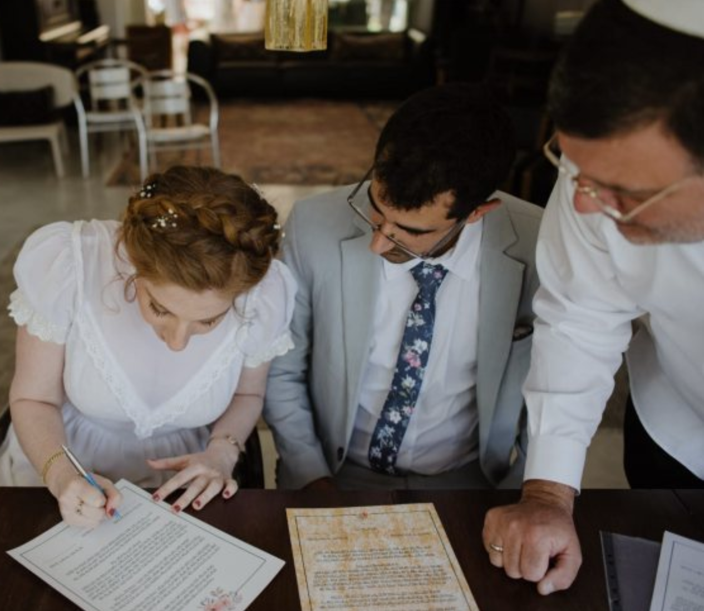

מהרגע הראשון הרב יוסף נתן לנו להרגיש שאנחנו מרכז האירוע, שאנחנו יכולים לבחור מה חשוב לנו ועשה הכל כדי להפוך את האירוע שלנו להכי אישי, להכי שלנו. אפילו גבריאל, שלא מגיע מרקע דתי הרגיש מחובר להתליך ואח"כ לטקס. במהלך הטקס, הרב יוסף שם אותנו ואת משפחותנו במרכז גם פיזית וגם רוחנית. הוא הנחה אבל לא ראה בעצמו מרכז תשומת הלב. הרגשנו עטופים ברגע המיוחד הזה. מההתחלה ועד הסוף היתה לנו תחושה שהוא מבין אותנו ושיעשה הכל כדי שנרגיש שזה הרגע שלנו.
– מיכל וגבריאל